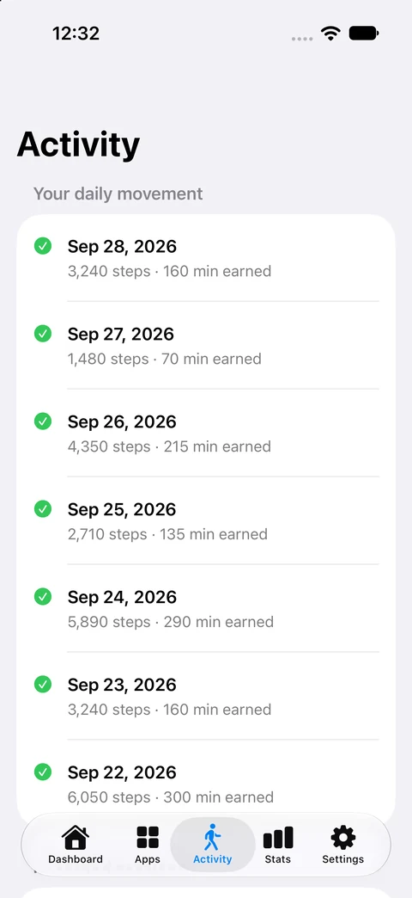

Choose your apps.
Connect Screen Time and select individual apps to protect. You decide where you want a little more intention.
Now available on the App Store
Earn screen time with your steps. Choose the apps you want to spend less time in, then take a walk before your next scroll.
For iPhone and iPad with iOS or iPadOS 17 or later. Regional prices and device compatibility are shown on the App Store.

A little movement. A better balance.
Set a rule that fits your day. Let the steps you take make room for the apps you enjoy.
Connect Screen Time and select individual apps to protect. You decide where you want a little more intention.
Connect Apple Health and choose your walking rule. By default, every 100 steps earns 5 minutes. Unused minutes carry over.
Spend earned minutes to unlock one selected app. Your other selections stay protected, and protection returns when the session ends.
App protection depends on Screen Time permission and Apple's system services. Each timed session unlocks one app. Website blocking is not supported.
Built for iPhone and iPad
Your steps, earned time, and streaks, together in a native app that feels at home on iOS.
A clear daily history of your movement and earned minutes.
View full Activity screen
Follow your recent activity, track streaks, and claim milestone bonuses.
View full Stats screen
Actual simulator screens with example data. Appearance adapts to your system, including Liquid Glass on supported iOS versions.
With permission, FeedFare reads step counts, including compatible Apple Watch steps after they sync to Health. Motion & Fitness provides live iPhone steps while FeedFare is open. Background Health updates can arrive later.
Choose which apps to protect and when to start a session. Permissions and system settings can affect protection. Get help with setup.
The native app stores progress and app selections locally, with no advertising or third-party analytics SDK. Device backups follow your Apple settings.
Available now
Get the full FeedFare app for US $4.99. No subscription, in-app trial, or paywall.
Get FeedFareInstall the native update through the App Store using the Apple Account that owns the app. Existing owners get full native access on supported devices.
Previous subscription plans have been retired and no longer renew. Help with previous purchases.
Requires iOS or iPadOS 17+. Local prices and availability are shown on the App Store.
Before your first walk
More setup help and troubleshooting are available on the FeedFare website.
Visit supportYou set the conversion rule in FeedFare. The default is 100 steps for 5 minutes, so 500 steps earns 25 minutes at that setting. Spend your balance on timed access to one selected app. Unused earned minutes carry over.
Yes. With Screen Time authorization, FeedFare protects the individual apps you select. Starting a session temporarily unlocks one app; the other selected apps stay protected. Protection returns when the session ends. Permissions can be revoked, so FeedFare is not an unbreakable lock or a substitute for parental supervision.
FeedFare can read steps from a compatible Apple Watch after they sync to Apple Health on your iPhone. Updates can be delayed; open FeedFare and refresh if your total has not caught up. A watch is not required to count steps with your iPhone.
No. The current native app is a one-time US $4.99 download with full access. Regional prices vary. Previous FeedFare subscription plans have been retired. Existing owners receive full native access when they install the update on a supported device.
FeedFare supports iPhone and iPad with iOS or iPadOS 17 or later. Features depend on the permissions and capabilities available on your device. Older installed versions may have different features. Check the App Store listing for current compatibility.
An independent app by Nick Rae
I built FeedFare to give a little movement a place in the moments we would otherwise spend scrolling. Choose your apps, find your walking rule, and make it part of your day. More about Nick.